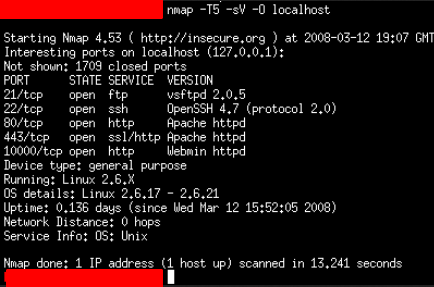
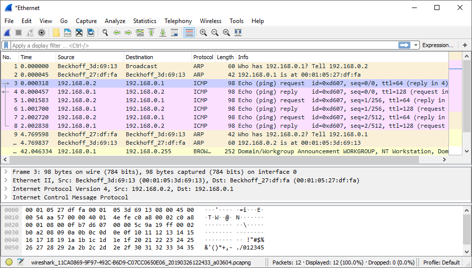
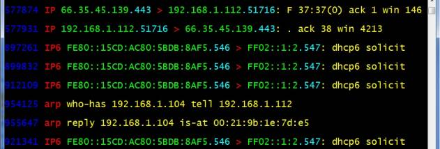

نصائح شاملة قبل البدأ بعملية الفحص (Scanning)
عند إجراء عملية الفحص (scanning) ، يجب على المخترق ملاحظة وتدوين بعض النصائح المساعدة التي تضمن له النجاح في هذه العملية ، كما يجب أيضا معرفة ما الذي يحدث على النظام المستهدف (target systems) .. لذا لنبدأ بهذه المعلومات التي يجب علينا وضعها في عين الاعتبار
1) بالعادة افحص رقم ال IP وليس الاسم (لفحص السيرفر وليس الويب) :
- ف مثلا اذا اردت فحص موقع معين بدلا من كتابة اسمه www.google.com اكتب رقم الآي بي الخاص به 8.8.8.8 . عند استخدام أداة الnmap يفضّل أن يكون شكل الأمر كالتالي : nmap -sS -sV 8.8.8.8
= ما الفائدة من هذه الخطوة أو ما الذي سيحدث لو قمت بضبط الأداة لفحص الاسم بدلا من رقم الآي بي ؟
ببساطة قد يكون للاسم أكثر من آي بي واحد ، فمثلا www.google.com لديه اثنان DNS IPv4 address : 8.8.8.8 , 8.8.4.4 ف بالتالي قد تقوم الأداة بفحص أي آي بي منهم مما يؤدي الى انخفاض الدقة في النتائج . على سبيل المثال قمت بالأمر التالي : nmap -sS -sV www.google.com وأظهرت النتائج وجود خدمة http apache ف لن تستطيع معرفة ل أي آي بي هذه النتائج ، وعلى هذا الحدث لن تستطيع إكمال باقي عمليات الاختراق .
- أما إذا اردت فحص محتويات الموقع على جهاز الضحية (السيرفر) ، هنا العكس يكون أفضل ب كتابة اسم الدومين
2) التعامل مع عدد كبير من الأهداف مثل فحص 1000 مضيف مثلا مع جميع المنافذ (65536 لل TCP و 65535 لل UDP) [بمعنى هناك نوعين من المنافذ الTCP والUDP]
- إذا استغرقت العملية ثانية واحدة لكل منفذ ، ستسغرق العملية حوالي 131 مليون ثانية بمعنى 4.15 سنة (65353*2*1000) . فحتى إذا استطعت فحص 100 منفذ بالثانية سيبقى لك 15 يوم لفحص باقي المنافذ وهنا تعد معضلة
- ف ماذا اذا حاولت فحص 10.000 او 100.000 جهاز بدلا من 1000 (في حالة كانت شركة ضخمة) ؟
= هناك عدة حلول ولكن لكل منها سلبياتها لكن لنبدأ بالحل الأول :
أ) فحص أهم المنافذ والأكثر استعمالا على سبيل المثال : TCP 21,22,23,25,80,135,137,139,443,445 الخ..
- سلبياتها أنه إذا كان هناك منفذ مفتوح ولكن المخترق لم يحسبه مثلا منفذ 324 SSH فلن يستطيع معرفة ذلك .
- ال nmap يفحص أهم المنافذ بشكل افتراضي فمثلا الأمر : nmap -sS 192.168.74.110 يفحص تلك المنافذ

ب) استخدام طرق لفحص المنافذ بسرعة فائقة
- مثلا فحص الهدف بأكثر من جهاز ف مثلا لو كان الهدف 1000 جهاز وكان لديك 5 أجهزة ف كل جهاز يدخل في عملية الفحص عليه فحص 200 جهاز فقط
- او تسريع معدل إرسال الPackets من الجهاز الفاحص (scanner) الى الجهاز المستهدف ولكن قد ينتج عنها خسارة بعض ال packets
- الاقتراب من جهاز الهدف قدر الامكان والهدف من هذه الخطوة الاقتراب من الشبكة الخاصة به مع نطاق ترددي أعلى (higher bandwidth)
جـ) سلبيات هذه التقنية أنها قد تؤدي إلى هجوم حجب الخدمة (Denial Of Service) بسبب إرسال Packets بمجموعة ضخمة إلى الهدف
3) إستخدام أدوات سنيفنج (Sniffing) :
- لمراقبة ما يخرج ويدخل من Packets لجهاز الضحية للتأكد من أن الأدوات تعمل بشكل منطقي
- ولتعطي فكرة عن سلوك الجهاز المستهدف مع الPacket المرسلة
- بالعادة لا تحتاج الى التقاط جميع الpackets وتخزنها في القرص الصلب لأنها ستأخذ مساحة كبيرة وبدلا من ذلك ، لا تحفظها ولكن اعرضها على الشاشة ومن أهم الأدوات المساعدة لهذه الخطوة الWireshark .

- أي أداة سنيفنج (sniffing) تستخدم ؟
أي أداة تعرض ال packet headers ستكون كافية لكن ستحتاج شيء ذو حجم صغير ومرن وسريع وبهذه المواصفات أداة tcpdump ستكون مثالية
4) استخدم الtcpdump
- أداة مجانية مفتوحة المصدر ولديها نسخة للويندوز تحت اسم WinDump
- www.tcpdump.org , www.winpcap.org/windump/default.htm

- خلال عملية الفحص حتى الاختراق ستعرض كل ال packets الخارجة والداخلة لجهازك (الجهاز الفاحص)
5) خيارات مساعدة عند استخدام أداة الtcpdump في مرحلة الفحص (scanning)
- بالعادة استخدام الtcpdump بدون أي خيارات (options) يعطي معلومات كافية
$ sudo tcpdump

- لكن قد تحتاج للاعتماد على بعض الخيارات المتنوعة سنذكر بعض منها :
-n : استخدام الأرقام بدلا من الأسماء للأجهزة
-nn : استخدام الأرقام للأجهزة والمنافذ بدلا من الأسماء
-i : يلتقط باكيتات من على منفذ معين
-v : لتكون النتائج أكثر ترتيبا
-w : لحفظ النتائج في ملف
-X : إظهار الباكيت بالآسكي (ASCII)
- بعض المصطلحات التي يجب معرفتها عند استخدام الtcpdump في مرحلة الفحص :
- البروتوكول : ethernet , ip , ip6 , arp , rarp , tcp , and udp
- الأنواع :
= ال host ويعطي فقط الباكتس (packets) إلى او من ذلك الجهاز
= ال net : يلتقط الباكتس (packets) من تلك الشبكة فقط
= ال port : يلتقط فقط الباكتس (packets) المرتبطة بذلك المنفذ
- الاتجاه :
= ال Src : فقط تعطيني الباكتس (packets) من ذلك الجهاز او المنفذ
= ال Dst : فقط تعطيني الباكتس إلى ذلك الجهاز
- استخدام “and” أو “or” لتدمج المصطلحات المذكورة فوق مع بعضها البعض .
- استخدام “not” للإلغاء
6) استخدام الtcpdump :
- إظهار كل ال TCP Packets من الهدف 10.10.10.10 بصيغة الآسكي ASCII وال Hex
# tcpdump -nnx tcp and dst 10.10.10.10
- إظهار كل ال UDP Packets من الهدف 10.10.10.10
# tcpdump -nn udp and src 10.10.10.10
- إظهار كل ال TCP Packets من المنفذ 80 الذاهبة والداخلة للجهاز 10.10.10.10
# tcpdump -nn tcp and port 80 and host 10.10.10.10
في هذا المقال الحصري تم شرح أهم النصائح التي يجب أخذها في عين الاعتبار أثناء القيام بعملية الفحص ، منها كيف يتم التعامل مع عدد كبير من الأهداف واستخدام أدوات السنيفنج (sniffing) مع شرح الخيارات وطرق الاستخدام بالاضافة الى معرفة أهمية هذه الأدوات لضمان نجاح عملية الاختراق .